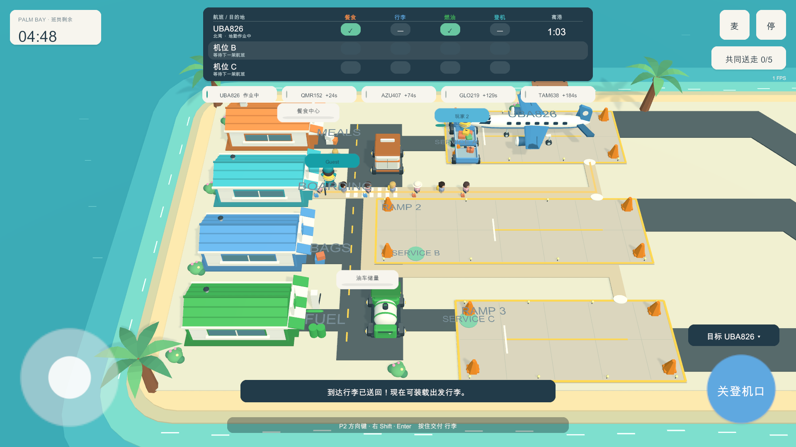
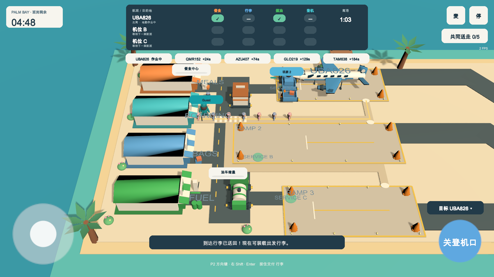
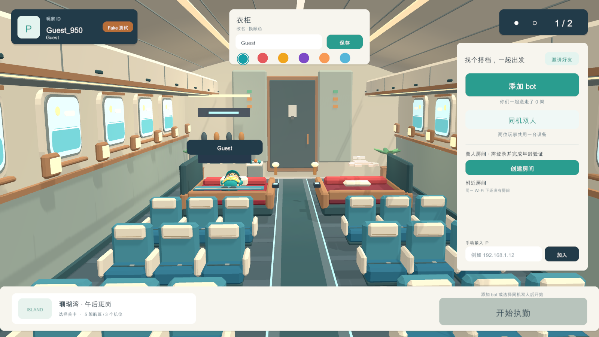
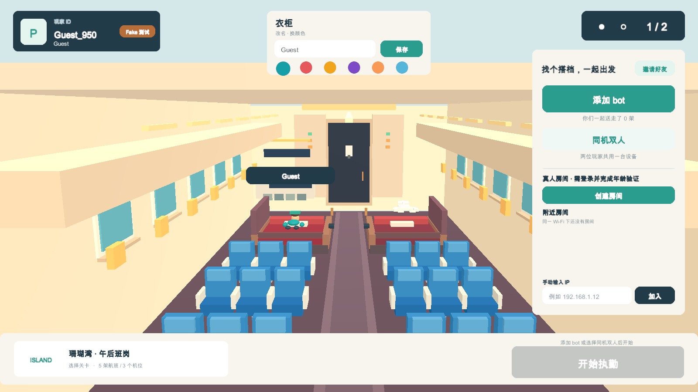
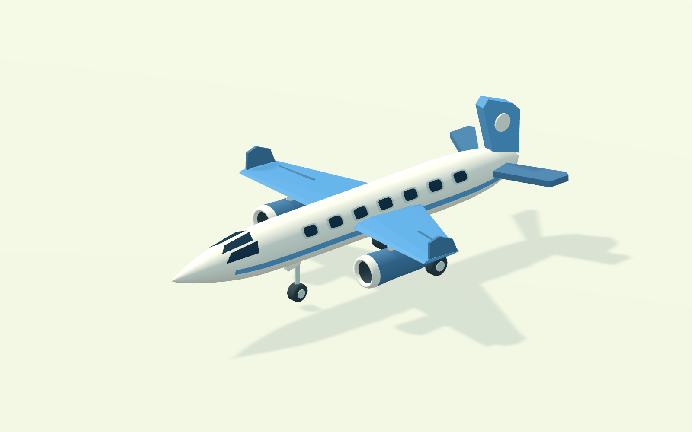
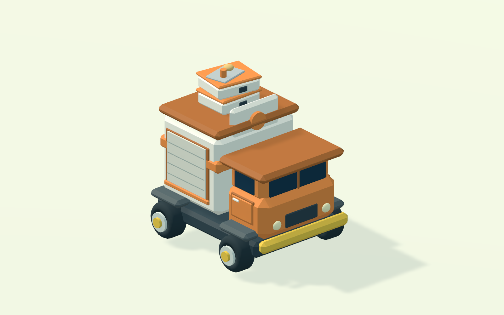
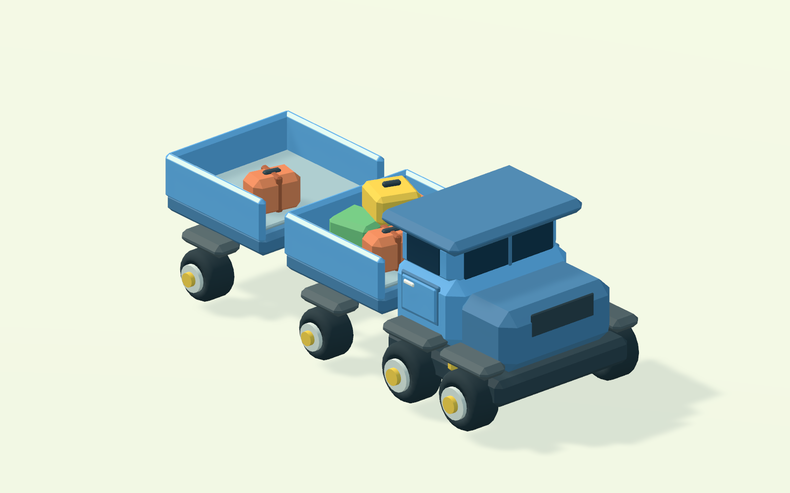
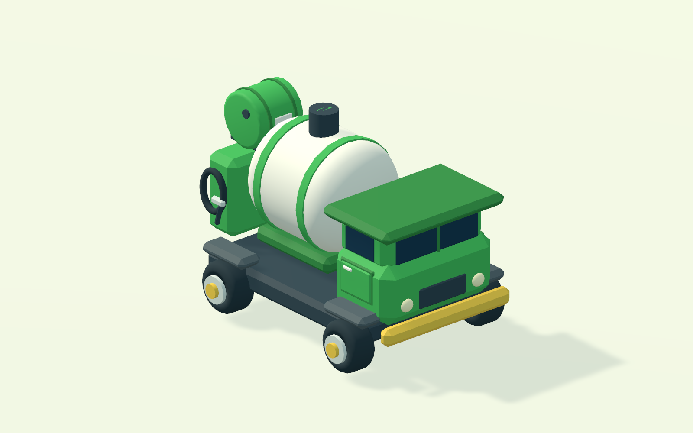

PALM BAY / 1.0.8画面精修对照
拖动滑块查看同一场景的前后变化。上方为实际编辑器游戏画面；下方近景直接使用游戏运行时的模型生成器。
机场班岗


之前现在机舱大厅


之前现在局内模型近景

飞机
餐食配送车
行李牵引车
燃油车近景使用统一光照与无 UI 视角以便检查几何，不是概念图。批处理画面中的 FPS 不能作为设备性能实测；本轮未进行 Android 真机验收。